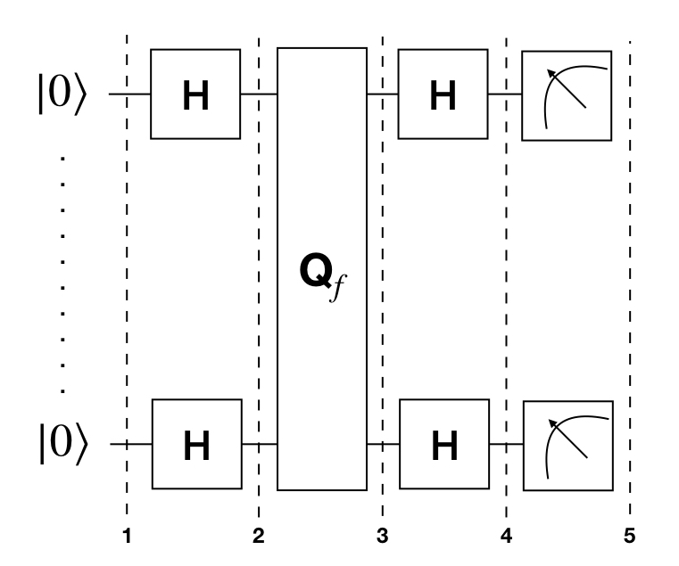

The Bernstein-Vazirani algorithm, first introduced in Reference [1], can be seen as an extension of the Deutsch-Josza algorithm covered in the last section. It showed that there can be advantages in using a quantum computer as a computational tool for more complex problems compared to the Deutsch-Josza problem.
We are again given a hidden function Boolean $f$, which takes as as input a string of bits, and returns either $0$ or $1$, that is:
Instead of the function being balanced or constant as in the Deutsch-Josza problem, now the function is guaranteed to return the bitwise product of the input with some string, $s$. In other words, given an input $x$, $f(x) = s \cdot x \, \text{(mod 2)}$. We are expected to find $s$.
Classically, the oracle returns $f_s(x) = s \cdot x \mod 2$ given an input $x$. Thus, the hidden bit string $s$ can be revealed by querying the oracle with $x = 1, 2, \ldots, 2^i, \ldots, 2^{n-1}$, where each query reveals the $i$-th bit of $s$ (or, $s_i$). For example, with $x=1$ one can obtain the least significant bit of $s$, and so on. This means we would need to call the function $f_s(x)$ $n$ times.
Using a quantum computer, we can solve this problem with 100% confidence after only one call to the function $f(x)$. The quantum Bernstein-Vazirani algorithm to find the hidden integer is very simple: (1) start from a $|0\rangle^{\otimes n}$ state, (2) apply Hadamard gates, (3) query the oracle, (4) apply Hadamard gates, and (5) measure, generically illustrated below:

The correctness of the algorithm is best explained by looking at the transformation of a quantum register $|a \rangle$ by $n$ Hadamard gates, each applied to the qubit of the register. It can be shown that:
$$ |a\rangle \xrightarrow{H^{\otimes n}} \frac{1}{\sqrt{2^n}} \sum_{x\in \{0,1\}^n} (-1)^{a\cdot x}|x\rangle. $$In particular, when we start with a quantum register $|0\rangle$ and apply $n$ Hadamard gates to it, we have the familiar quantum superposition:
$$ |0\rangle \xrightarrow{H^{\otimes n}} \frac{1}{\sqrt{2^n}} \sum_{x\in \{0,1\}^n} |x\rangle, $$which is slightly different from the Hadamard transform of the reqister $|a \rangle$ by the phase $(-1)^{a\cdot x}$.
Now, the quantum oracle $f_a$ returns $1$ on input $x$ such that $a \cdot x \equiv 1 \mod 2$, and returns $0$ otherwise. This means we have the following transformation:
$$ |x \rangle \xrightarrow{f_a} | x \rangle = (-1)^{a\cdot x} |x \rangle. $$The algorithm to reveal the hidden integer follows naturally by querying the quantum oracle $f_a$ with the quantum superposition obtained from the Hadamard transformation of $|0\rangle$. Namely,
$$ |0\rangle \xrightarrow{H^{\otimes n}} \frac{1}{\sqrt{2^n}} \sum_{x\in \{0,1\}^n} |x\rangle \xrightarrow{f_a} \frac{1}{\sqrt{2^n}} \sum_{x\in \{0,1\}^n} (-1)^{a\cdot x}|x\rangle. $$Because the inverse of the $n$ Hadamard gates is again the $n$ Hadamard gates, we can obtain $a$ by
$$ \frac{1}{\sqrt{2^n}} \sum_{x\in \{0,1\}^n} (-1)^{a\cdot x}|x\rangle \xrightarrow{H^{\otimes n}} |a\rangle. $$Let's go through a specific example for $n=2$ qubits and a secret string $s=11$. Note that we are following the formulation in Reference [2] that generates a circuit for the Bernstein-Vazirani quantum oracle using only one register.
We now implement the Bernstein-Vazirani algorithm with Qiskit for a two bit function with $s=11$.
# initialization
import matplotlib.pyplot as plt
%matplotlib inline
%config InlineBackend.figure_format = 'svg' # Makes the images look nice
import numpy as np
# importing Qiskit
from qiskit import IBMQ, BasicAer
from qiskit.providers.ibmq import least_busy
from qiskit import QuantumCircuit, ClassicalRegister, QuantumRegister, execute
# import basic plot tools
from qiskit.visualization import plot_histogram
We first set the number of qubits used in the experiment, and the hidden integer $s$ to be found by the algorithm. The hidden integer $s$ determines the circuit for the quantum oracle.
nQubits = 2 # number of physical qubits used to represent s
s = 3 # the hidden integer
# make sure that a can be represented with nqubits
s = s % 2**(nQubits)
We then use Qiskit to program the Bernstein-Vazirani algorithm.
# Creating registers
# qubits for querying the oracle and finding the hidden integer
qr = QuantumRegister(nQubits)
# bits for recording the measurement on qr
cr = ClassicalRegister(nQubits)
bvCircuit = QuantumCircuit(qr, cr)
barriers = True
# Apply Hadamard gates before querying the oracle
for i in range(nQubits):
bvCircuit.h(qr[i])
# Apply barrier
if barriers:
bvCircuit.barrier()
# Apply the inner-product oracle
for i in range(nQubits):
if (s & (1 << i)):
bvCircuit.z(qr[i])
else:
bvCircuit.iden(qr[i])
# Apply barrier
if barriers:
bvCircuit.barrier()
#Apply Hadamard gates after querying the oracle
for i in range(nQubits):
bvCircuit.h(qr[i])
# Apply barrier
if barriers:
bvCircuit.barrier()
# Measurement
bvCircuit.measure(qr, cr)
bvCircuit.draw(output='mpl')
# use local simulator
backend = BasicAer.get_backend('qasm_simulator')
shots = 1024
results = execute(bvCircuit, backend=backend, shots=shots).result()
answer = results.get_counts()
plot_histogram(answer)
We can see that the result of the measurement is the binary representation of the hidden integer $3$ $(11)$.
# Load our saved IBMQ accounts and get the least busy backend device with less than or equal to 5 qubits
IBMQ.load_account()
provider = IBMQ.get_provider(hub='ibm-q')
provider.backends()
backend = least_busy(provider.backends(filters=lambda x: x.configuration().n_qubits <= 5 and
x.configuration().n_qubits >= 2 and
not x.configuration().simulator and x.status().operational==True))
print("least busy backend: ", backend)
# Run our circuit on the least busy backend. Monitor the execution of the job in the queue
from qiskit.tools.monitor import job_monitor
shots = 1024
job = execute(bvCircuit, backend=backend, shots=shots)
job_monitor(job, interval = 2)
# Get the results from the computation
results = job.result()
answer = results.get_counts()
plot_histogram(answer)
As we can see, most of the results are $11$. The other results are due to errors in the quantum computation.
import qiskit
qiskit.__qiskit_version__